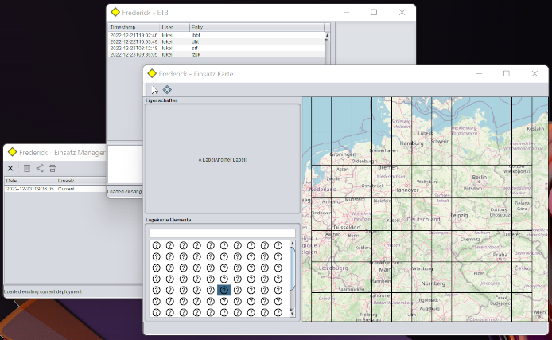

BBK
BBK
Wilkommen
|
Wilkommen bei Frederick, den THW Zugtrupp Einsatz Assistent. Frederick is eine Java basierte Desktop Anwendung, der absichtlich für Einsatzzenarion bei eine Bundesanstalt entwickelt ist. Im gegenteil zu viele bestehende Werkzeuge ist Frederick nicht für eine stabiles vernetztes welt entwickelt, Sondern für eine welt ohne netze, am diversten geräten und wahrscheinlich unter zeitdruck. |
 |
Für Hilfe mit bedienung des Software, bitte sehe mal den Handbuch an.
Das Projekt und Das Produkt
Um etwas klarheit zu schaffen, soll man den unterschied zwischen das project und das product verstehen.
- Das Projekt ist den organisation und entwicklung das Produkt. Es ist eine betreibung von aufwand usw.
- Das Product ist den Binär Desktop Anwendung. Es ist eine Artefact.
Da dieser Software Produkt für eine Bundesanstalt gezielt ist, wird schon einiges mit den Projekt anders als mit anderen Privaten oder Open Source Projekte nötig sein. Obwohl das Open Source Welt eine wunderschönne Welt ist, ist den Welt eine Bundesanstalt schon (für gute Grunde) etwas komplitzierte. Als eine Anstallt des Staates, muss viele Rechtliches geklärt sein, bevor man eine Produkt offiziel annerkennen kann. Allein einfache fragen mit Lizenzen von Open Source Software mussen geklärt sein, den DSVGO muss beachtet werden, möglicherweise mussen bestimmte ISO vorschriften bei den Dokumente und Testergebnisse vorliegen.
Diese Projekt hat den Ziel nicht nur eine nutzliche Anwendung zu schaffen, sondern als eine Template da zu stehen. Es soll die verschiedene Anforderungen sammeln und dokumentieren. Gleichzeitig soll viele von diesen (öfters zeitaufwändig) Anforderungen durch Continuous Integration (CI) erledigt werden. Dies soll es ermöglichen, andere Software Entwickler ihre Projekte leichter an den beinen zu kriegen.